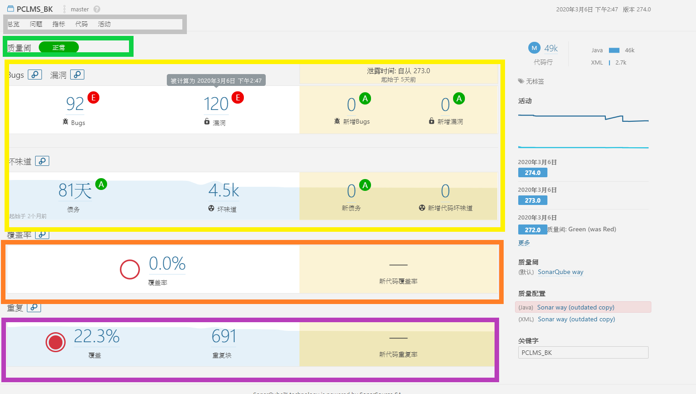
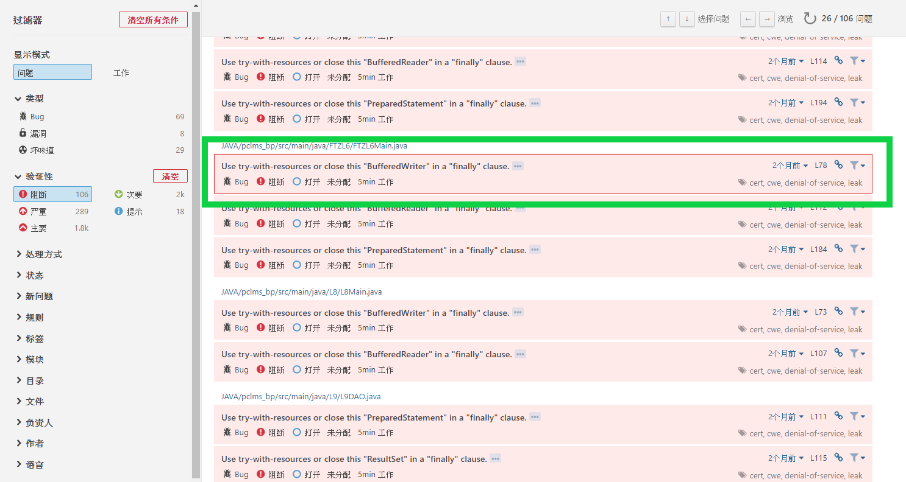
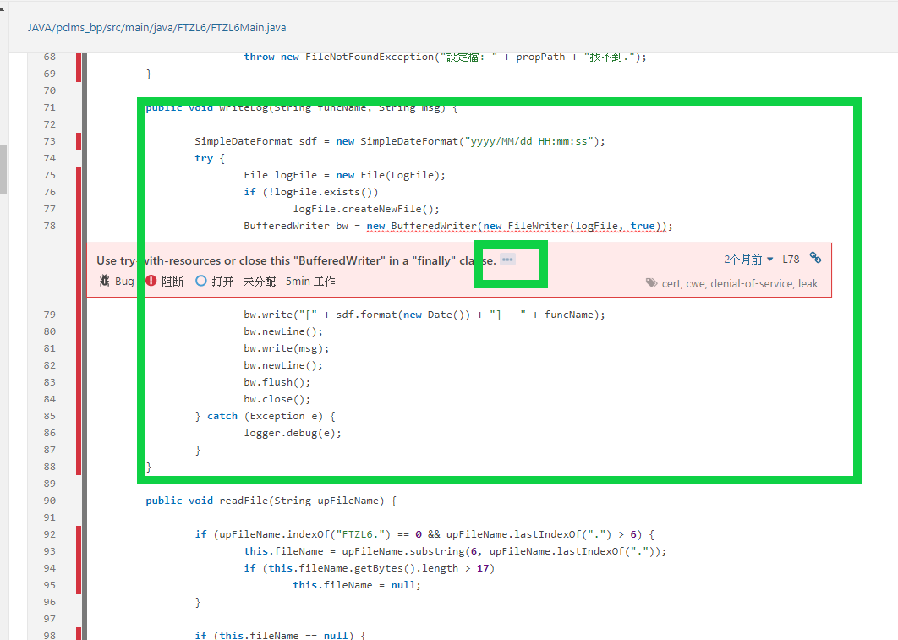
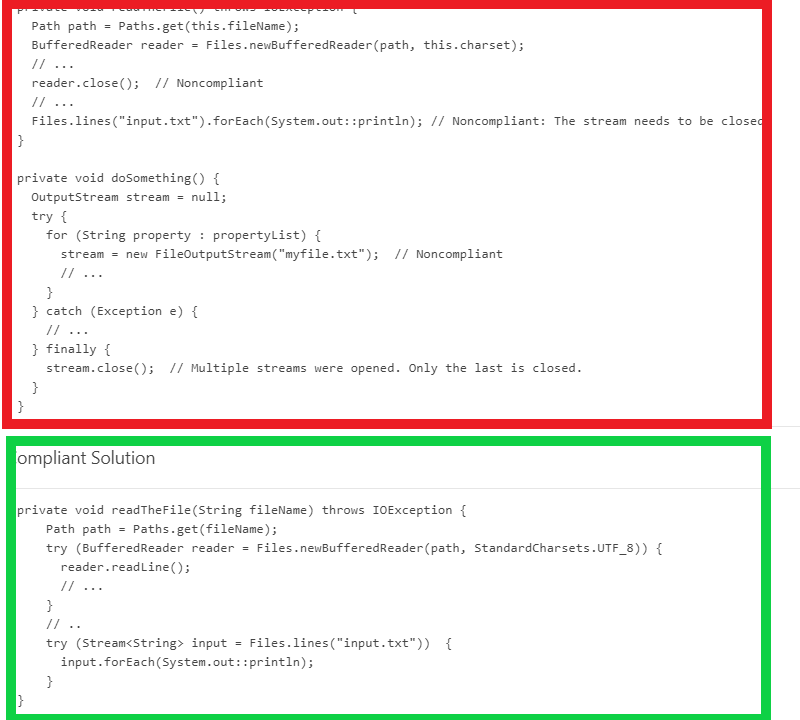
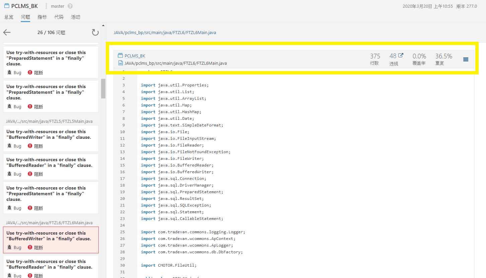

SonarQube
簡介SonarQube
Sonar是一個用於代碼質量管理的開源平台，用於管理代碼的質量，是一個Web系統，展現了靜態代碼掃描的結果， 通過插件形式可以支持二十幾種語言的代碼質量檢測，通過多個維度的檢查了快速定位代碼中潛在的或者明顯的錯誤； SonarQube 程式碼品質分析工具用 7 個維度來分析程式碼品質，包括：
- 程式架構 Architecture & Design
- 冗餘程式 Duplications
- 單元測試 Unit tests
- 複雜度 Complexity
- 潛在問題 Potential bugs
- 寫作原則 Coding rules
- 註解 Comments
Sonar檢測維度
Sonar可以從七個維度進行代碼質量檢測，我們可以根據不同維度的嚴重性然後根據我們的經驗做出相應的代碼優化，當然並不是所有維度我們都有必要代碼修改；
- 代碼規範 Sonar可以通過PMD、CheckStyle、Findbugs等代碼規則檢測工具來檢測我們代碼是否符合代碼規範；
- 潛在的缺陷 Sonar可以通過PMD、CheckStyle、Findbugs等代碼規則檢測工具來檢測我們代碼是否有代碼缺陷（比如空指針是否有判斷、IO流是否有關閉等）；
- 糟糕的複雜度分佈 文件、類、方法等，如果復雜度過高將難以改變，這會使得開發人員難以理解它們 且如果沒有自動化的單元測試，對於程序中的任何組件的改變都將可能導致需要全面的回歸測試
- 重複代碼 程序中包含大量複製粘貼的代碼是質量低下的，sonar可以展示源碼中重複嚴重的地方
- 註釋的檢測 沒有註釋將使代碼可讀性變差，特別是當不可避免地出現人員變動時，程序的可讀性將大幅下降而過多的註釋又會使得開發人員將精力過多地花費在閱讀註釋上，亦違背初衷
- 單元測試 sonar可以很方便地統計並展示單元測試覆蓋率
- 糟糕的設計 通過sonar可以找出循環，展示包與包、類與類之間相互依賴關係，可以檢測自定義的架構規則通過sonar可以管理第三方的jar包，可以利用LCOM4檢測單個任務規則的應用情況， 檢測耦合。
介面簡介

綠色：功能列
選單
- 漏洞、BUG、壞味道數量與趨勢
- 單元測試覆蓋率，重複程式碼比率
- 程式數量
- 程式狀態
- 技術債
BUG程式錯誤，漏洞可能被駭客利用部分
過濾器分類BUG、漏洞與壞味道

綠色：條件篩選 紅色：查詢結果
驗證性有五種層級：
- BLOCKER阻斷：影響功能很有可能發生memory leak
- CRITICAL嚴重：Empty catch block, SQL injection
- MAJOR主要：質量缺陷會嚴重影響開發人員的工作效率：未發現代碼段，重複的塊，未使用的參數，
- MINOR次要：質量缺陷可能會稍微影響開發人員的生產力：行不應太長，“ switch”語句應至少包含3種情況，…
- INFO提示：錯誤或質量缺陷都只是發現。
檢視該弱點，並選擇該項目 
檢視該項項目檢視 
檢視修改方式 
檢視該程式 